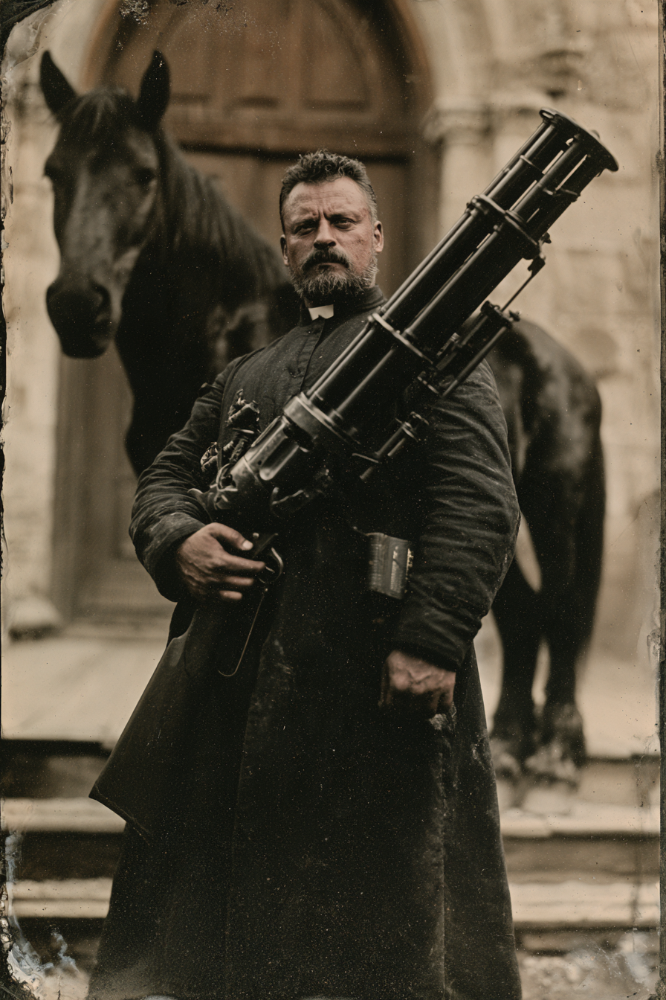

Archetyp: BLESSED (Gesegnete)
Offizieller PEG-Pregen (Pregens_Deadlands01.pdf, Deadlands Reloaded), für SWADE neu gebaut.
Ein Engel sagte ihm, das Flüstern hinter den Maschinen seien Dämonen. Er hat gekündigt, sich Gott zugewandt und auf dem Weg hinaus eine Gatling-Schrotflinte mitgenommen. Er nennt das seine letzte Sünde. Hellstromme nennt es Diebstahl im Wert von zweitausend Dollar.
| Agility | d6 | 1 |
| Smarts | d6 | 1 |
| Spirit | d6 | 1 |
| Strength | d8 | 2 |
| Vigor | d4 | 0 |
| Skill | Attr. | Die | Pts. |
|---|---|---|---|
| Faith | Spi | d8 | 4 |
| Persuasion | Spi | d6 | 1 |
| Repair | Sma | d6 | 2 |
| Shooting | Agi | d6 | 2 |
| Healing | Sma | d4 | 1 |
| Occult | Sma | d4 | 1 |
| Fighting | Agi | d4 | 1 |
| Notice | Sma | d4 | core |
| Weapon | Range | Damage | AP | RoF | Wt. | Cost |
|---|---|---|---|---|---|---|
| Gatling-Schrotflinte | 12/24/48 | 1–3W6 | – | 2 | 7,5 | – |
| 15 Schuss, nur volle Feuerrate, Mindeststärke W8 · „geliehen" bei Hellstromme Industries | ||||||
| Axtstiel | – | Stä+W4 | – | – | 0,5 | $1 |
| als Keule gekauft (GB S. 29) | ||||||
| Power | PP | Range | Dur. | Effect |
|---|---|---|---|---|
| Heiliges Symbol | 3 | Selbst | 5 | übernatürlich Böse müssen eine Willenskraftprobe bestehen, um ihn direkt anzugreifen; –2 für die Kreatur bei einer Steigerung |
| Heilung | 3 | Berührung | Sofort | entfernt eine Wunde, die jünger als eine Stunde ist; zwei bei einer Steigerung |
| Waffe verbessern | 2 | Verstand | 5 | Schaden der Waffe +2, +4 bei einer Steigerung — der Segen liegt auf der Trommel |
Die Gatling-Schrotflinte kostet eigentlich $1.000 — sie ist Teil der Vorgeschichte, so steht es ausdrücklich im PEG-Original („That's the nice thing about RPGs — sometimes you get to break the rules!"). Der Steckbrief über $2.000 gehört zum selben Geschäft.
Guts: freie Wiederholung bei Furchtproben · Luck: ein zusätzlicher Benny je Sitzung
Sünde (GB S. 62): leicht = –2 auf Glaube für eine Woche · schwer = eine Woche ohne Mächte · Todsünde = Mächte weg bis zur Sühne
Hintergrund. Father Sam war eine Zeit lang Feinmechaniker bei Hellstromme Industries, bis er eine Vision über die Maschinen hatte, an denen er mitbaute: Ein Engel sagte ihm, die Eingebung hinter den Apparaten sei in Wahrheit das Murmeln von Dämonen. Er schwor jede weitere Mitarbeit an den Höllenmaschinen ab und gab sich Gott hin — seine letzte Sünde war das „Ausleihen“ einer Gatling-Schrotflinte aus der Fabrik, in der er arbeitete. Er weiß noch, wie man die eine oder andere Höllenmaschine repariert, und er beschützt die Unschuldigen mit seiner Gatling. Aber weiter geht es heutzutage nicht mehr.
Build. Geschicklichkeit W6, Verstand W6, Geist W6, Stärke W8, Konstitution W4 · Bewegung 5, Parade 4, Robustheit 5 (4 + 1 Fettleibig) Glaube W8, Überreden W6, Reparieren W6, Schießen W6, Heilen W4, Okkultismus W4, Kämpfen W4, Bemerken W4 Talente: Arcane Background (Blessed) (Arkaner Hintergrund (Gesegneter)), Guts (Mumm), Luck (Glück) Handicaps: Wanted (Gesucht) — Major: 2.000 Dollar, gezahlt von Hellstromme Industries · Vow (Schwur) — Minor: die Unschuldigen vor dem Bösen beschützen · Obese (Fettleibig) — Minor: Größe +1, Bewegung –1, Sprintwürfel W4 Mächte (15 MP): Heiliges Symbol (Pflicht), Heilung, Waffe verbessern — der Segen liegt auf der Trommel: wenn Sam betet, dreht sie sich eine Spur zu leicht. Die Stärke W8 ist kein Zufall: die Gatling-Schrotflinte verlangt Mindeststärke W8 — deshalb hat das PEG-Original sie ihm gegeben, und deshalb bleibt sie. Reloadeds „Conviction“ gibt es in SWADE nicht als Talent (dort ist Conviction eine Setting-Regel); daraus wurden Mumm und Glück — die Überzeugung und der Engel, der die Hand über ihn hält. Bewegung 5 und Robustheit 5 stimmen mit dem Original überein.
Aufhänger. Zweitausend Dollar sind für eine geliehene Flinte zu viel Geld — selbst für Hellstromme. Entweder will der Doktor ein Exempel, oder Sam hat auf dem Weg hinaus mehr mitgenommen als eine Waffe: den Plan in der Bibel zum Beispiel, den er nie wieder ansieht. Und dann ist da die Frage, die er sich nachts stellt: ob der Engel echt war — oder nur die höflichste Stimme im selben Chor.
Notizen. So sehen die sechs Zeilen des Bogens am Tisch aus.
Warum es Spaß macht. Ein Priester mit einer Gatling-Schrotflinte ist ein ganzer Charakterbogen in fünf Wörtern. Mechanisch ist er zwei Figuren in einer: der einfachste arkane Hintergrund des Spiels (Glaube würfeln, fertig) und die größte Waffe, die ein Novize tragen kann. Und die Spannung spielt sich von selbst — jede Salve aus fünfzehn Läufen stellt die Frage, ob zwischen den Zielen ein Unschuldiger steht, und sein Schwur verbietet ihm, sie falsch zu beantworten.
Regelgrundlage: Regelnotizen · Archetyp-Notizen